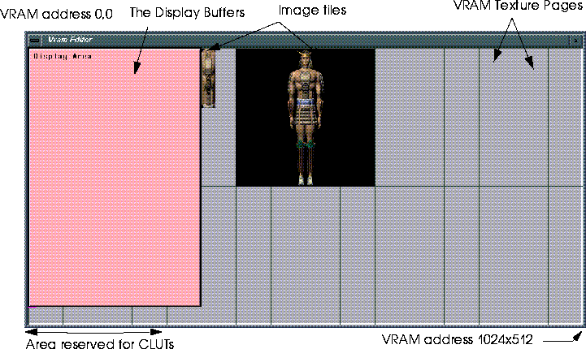
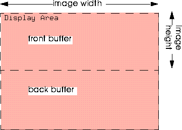
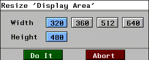
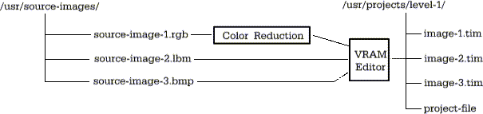
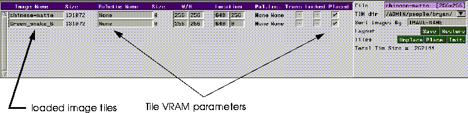
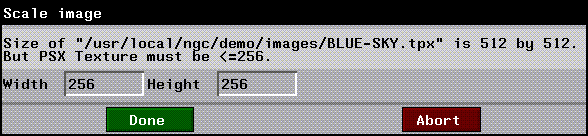
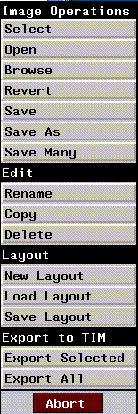
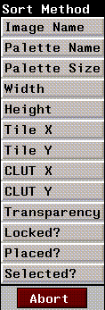

N-Paints VRAM editor allows you to quickly and easily transform image files into .TIM files for use on the Sony Play Station. The VRAM Editor also provides a way for you to manage VRAM memory in the PlayStation, making the most of this platforms resources.
In this chapter, we'll cover
In this Chapter
The VRAM Editor performs two essential tasks:
What is the VRAM Editor?
The VRAM Editor Canvas is a graphical representation of the PlayStation's Video Ram.
Sony PlayStation (PSX) VRAM

Display Area
The Display Area represents the VRAM occupied by the PSX's display buffers. Its dimensions reflect the horizontal and vertical resolution (in pixels) of images displayed on a TV by the PSX. Because the PSX uses double buffering, the display area represents the memory consumed by both the front and back buffers. Therefore, although the width of the display area reflects the horizontal resolution of displayed images, the actual vertical resolution of displayed images is half the vertical dimension of the display area.

Changing the Size of the Display Area
To change the size of the display area, (CLICK-L) on the display area. The Resize Display Area pop-up menu appears.

To choose a new value for width, (CLICK-L) on one of the button in the pop-up menu.
Image Tiles
Image tiles are representations of the TIM images themselves. The size of the tile in the VRAM Editor canvas is proportional to the amount of VRAM required to store the image. VRAM requirements are determined by two factors:
Color Depth, Image Size, and VRAM Requirements
PSX VRAM addresses are 16 bits in size. Thus, each pixel in a 16-bit image occupies an entire VRAM address, while two 8-bit pixels (or 4 4-bit pixels) can be accommodated in a single address. Thus, you can reduce the amount of VRAM space required to store an image by 50% by reducing color depth from 16 to 8 bits.
Texture Pages
Texture pages are the logical divisions on the PSX's VRAM. A texture page consists of 16,384 VRAM addresses arranged in a 64x256 array. Each address in turn accommodates 16 bits.
Image Tile Placement Rules
Two rules govern the behavior of images stored in PSX texture pages.
Color Lookup Tables (CLUTs)
16-bit images have direct color, meaning that color information for each pixel is stored with that pixel in each VRAM address. Color information for 4- and 8-bit images, however, is stored in a separate Color Lookup Table (CLUT). A CLUT is the reduced color-palette generated during the color reduction process. CLUTs must be stored in VRAM, usually in the area "beneath" the display buffers. However, you can store as many CLUTs as you have space in VRAM.
The VRAM canvas represents 1MB of VRAM. When you place tiles and CLUTs on the VRAM Canvas, you are creating a VRAM layout. A layout is nothing more than an index which shows the source images for each tile, their location in VRAM, and a few other parameters. Figure 8.5 is a schematic representation of workflow wi th the VRAM Editor.
Workflow with the VRAM Editor

Using the VRAM Editor
You control the VRAM editor through the VRAM Editor menu:

Image Tile Parameters
The largest section of the VRAM Editor menu is devoted to displaying image source file names and their VRAM parameters.
Image Name
The Image Name field contain specifies the original source image for a tile.
Figure 8.7 VRAM Editor Image Operations pop-up menu
Size
The first size field in the tile parameters menu shows the size of the source image in bytes.
Palette Name
The name of the current palette associated with the image. When you load a color-mapped image, the associated palette is automatically loaded. When you load a full-color image, no palette is loaded.
Selecting Another Palette
You can assign another palette to an image, selecting from among those loaded into memory. For example, if you created a composite palette using Color Reduction, you'll want to make sure that all your TIM files which will be generated reference the same palette. To reference another palette:
Figure 8.8 Palette operations pop-up menu
Size
The second size field refers to the color-depth of the image (the number of bits used by each pixel to record color information).
Changing Bit Depth
If you wish to change the Bit Depth of an image, you must send the image to Color Reduction. To do so:
1. (CLICK-R) on the Image Name field.
2. (CLICK-L) on Color Reduction.
W/H
These values are the width and height of the TIM image. TIM images are limited to 256x256 pixels. If you attempt to load an image which is larger than this limit, the VRAM Editor will offer you the opportunity to reduce the image to the maximum allowable size:

Location
The first VRAM address occupied by the image. VRAM addresses are specified as cartesian (X,Y) coordinates, beginning with (0.0) in the upper left hand corner of the VRAM Editor Canvas and extending to 1024x512 in the lower right hand corner.
Pal. Loc.
These values are the coordinates of the VRAM address for the CLUT associated with the image file.
Trans
When toggled on, this option instructs the PSX to display black backgrounds as transparent.
Lock
When a tile is locked, it's VRAM address cannot be changed, even when you use the Fit Tiles command.
Placed
When Placed is toggled, the image is placed on the VRAM canvas. Images appear on the canvas as image tiles. The area of a tile is directly proportional to the amount of VRAM it occupies.
The VRAM Editor Canvas represents a single layout. A layout usually corresponds to a logical division in your game, such as a game level. From the perspective of the VRAM Editor, a layoutlayout is nothing more than a list of source images, their corresponding TIM files, and a few parameters. Once you have created a layout by loading and placing image tiles on the VRAM Canvas, you'll want to save this configuration to that you can work with it again. You can save layouts to disk as layout files. There can only be one layout file per directory. Layout files are always named VRAM.layout.
Vram Editor File Operations
Specifying the TIM Directory
A given directory can only contain a single layout. You must select a directory to be the current TIM directory. A layout file and all TIM files are then written to this directory.
To specify the current directory:
Managing Images, TIM Files, and layouts
Loading images into the VRAM Editor is very similar to loading images anywhere else in N-Paint. Any images which you have loaded in other modules of N-Paint (such as Color Reduction or from the Tools Menu) are available for you to use in the VRAM Editor. You can also open image files directly from disk.

Figure 8.11 The Save Many dialog box
Sort Images By
When you (CLICK-L) on this field, the Sort Method pop-up menu appears. (CLICK-L) on a method to select it and sort the images on the VRAM Editor menu.

Layout
The layout is the arrangement of TIM files in VRAM. You can save this arrangement to memory.
TIles
The three Tiles commands allow you to place image tiles on the canvas, and arrange them in the most compact arrangement possible using a best-fit algorithm.
Init.
(CLICK-L) on Init. to remove all tiles from the VRAM Editor. You might use Init. when you finish one layout and want to reset the VRAM Editor to begin working on another.
VRAM Editor Setup Parmeters
The following parameters can be modified in the N-Paint Setup menu. To reach the Setup menu, (CLICK-L) on the Setup button in the N-Paint modes bar.
Stop at failure?
When this option is toggled, the VRAM Editor will return an error message when it is unable to place a tile using the Best Fit algorithm. Otherwise, the offending tile will not be placed, but no error message will appear.
Use Dos filename?
When this option is toggled, TIM file names are truncated to eight characters in accordance with DOS file name requirements. For example, CharacterSprite.lbm will end up as Characte.TIM.
Copyright © 1996, Nichimen Graphics Corporation. All rights reserved.